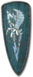
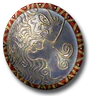
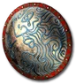
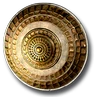

Heyday
Felix's Brace
Heraldic Shield
Defense: 16-26
Chance to Block: 20%
Required Level: 22
+75-100% Enhanced Defense
25-35% Increased Chance of Blocking
+20% Faster Block Rate
+15 to Dexterity
+15-25% to All Resistances
Physical Damage Reduced By 10-15
+40% Faster Hit Recovery
Unique Paladin Shield
Felix's Brace
- Type
- Paladin Shield
- Base
- Heraldic Shield
- Tier
- Normal
- Required level
- 22
- Item level
- 12
- Required strength
- 40
- Max sockets
- 4
- Class
- Paladin only
Other unique Paladin Shields

Herald of Zakarumlevel 50
Alma Negralevel 77- Dragonscalelevel 80

Validatorlevel 8- Seafarer's Securitylevel 5
- Swiftfoot Slashlevel 17
- Grip of the Gorgonlevel 10
- Secret of Steellevel 15
- Bastion of Hopelevel 20
- Hellchatterlevel 27

King's Guardlevel 25- Devourer of Worldslevel 32